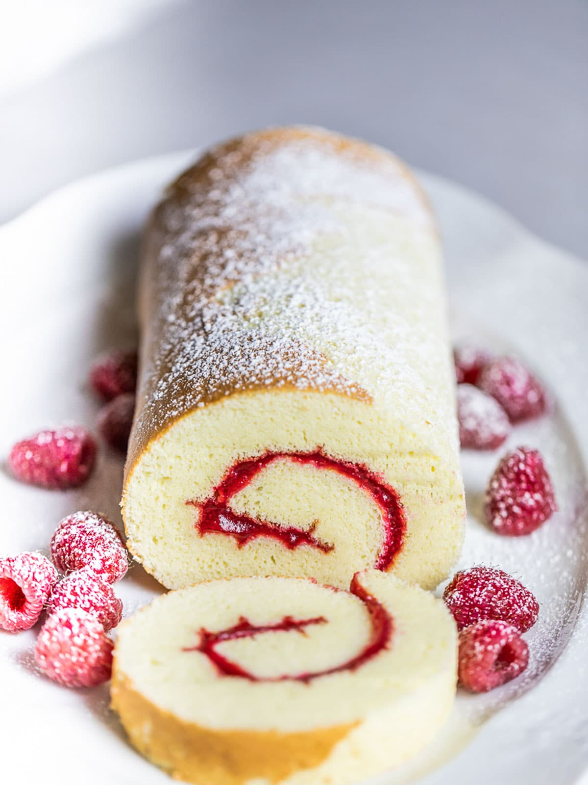

CAKES
Cake is a form of sweet food made from flour, sugar, and other ingredients, that is usually baked. In their oldest forms, cakes were modifications of bread, but cakes now cover a wide range of preparations that can be simple or elaborate, and that share features with other desserts such as pastries, meringues, custards, and pies. The most commonly used cake ingredients include flour, sugar, eggs, butter or oil or margarine, a liquid, and a leavening agent, such as baking soda or baking powder. Common additional ingredients and flavourings include dried, candied, or fresh fruit, nuts, cocoa, and extracts such as vanilla, with numerous substitutions for the primary ingredients. Cakes can also be filled with fruit preserves, nuts or dessert sauces (like pastry cream), iced with buttercream or other icings, and decorated with marzipan, piped borders, or candied fruit
SWISS ROLL R160
BATTER CAKE R140
YUMMLY R150